You asked: “Leech already had a nice animation for HP going from the enemy to the player. Why are the new melds different?” Asked about the rest, you said: “Yes go through them”. A meld counts as both its words, so each word's own look already plays for it. Many melds also drew their own copy of that look on top, in their own colour. I went through all 98. Where a meld drew a word's thing, it now uses that word's own look. Where the word's look already plays, the meld no longer draws a copy. Each meld's own twist stays on top.
43 melds change, in seven groups. Before on the left, after on the right, at the moment where they differ most.
Lightning's own bolt is a thin jagged line, white as it strikes, then yellow. The Lightning melds drew thick glowing bolts of their own, in their own colours, and Jolt and Fulgurite drew theirs on top of the game's own arcs. Now every bolt a meld draws is Lightning's own, and where the game's arc already strikes, the meld adds none.
Static, Jolt, Overcharge, Quicksilver, Fulgurite, Conduit.
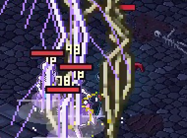
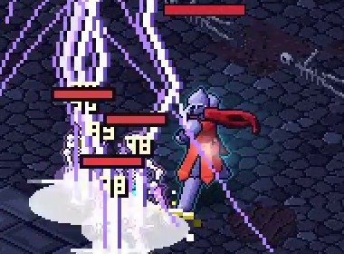
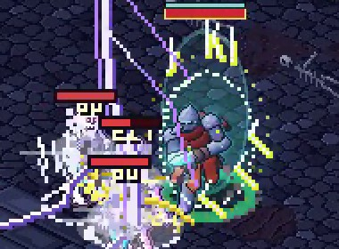
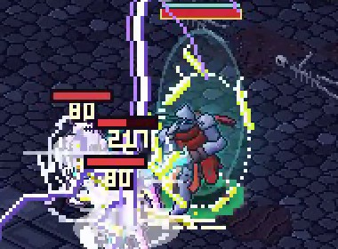
Precise's own sight is four corners closing on what it marks, then snapping tight. A Precise meld marks with Precise, so that sight already closes, and every Precise meld drew a second sight of its own on top, a cross in its own colour. Now they leave the mark to Precise's sight. Where a meld's twist is a sight of its own, such as Doubletap's two glints or a monster taking aim at him, it is drawn as Precise's sight.
Duelist, Needle, Brand, Seeker, Quickdraw, Doubletap, Bullseye, Rapier, Riposte, Lancet, Detonator, Ambush, Pressure Point.
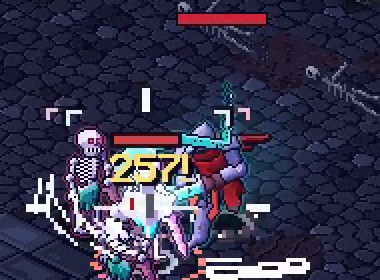
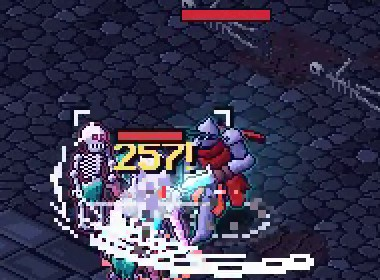
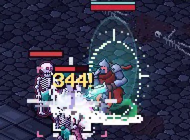
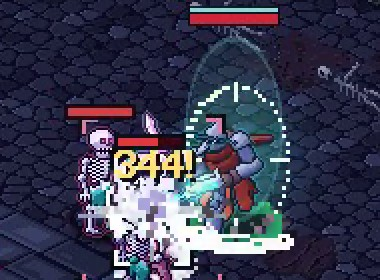
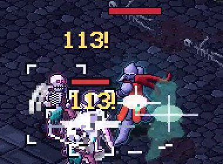
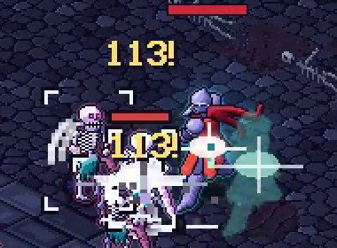
When a Frenzied word kills, a spark leaps from the fallen into him. Berserk and Fever drew their own streak to him on top of that spark. Now only Frenzied's spark flies.
Berserk, Fever.
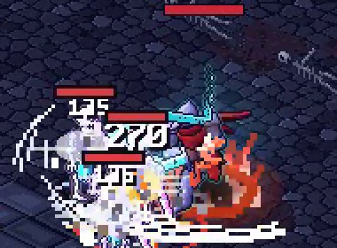
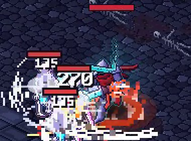
A stunned monster shows Heavy's own stun over it. Charge and Fulgurite drew their own ring of stars over the stunned one as well. Now only Heavy's stun shows.
Charge.
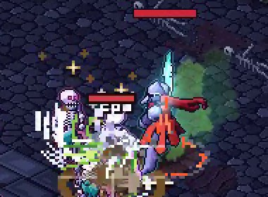
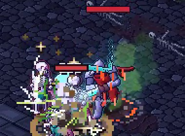
Volatile's own blast is a violet burst with debris and crackle. When Quickfuse or Concussion kills, that blast already goes off, and the melds drew their own burst on top. Cluster, Detonator, Timebomb, Mayhem, Minefield and Hair Trigger set off blasts of their own, drawn as plain glows. Now every one of them goes off as Volatile's own blast.
Cluster, Detonator, Timebomb, Mayhem, Minefield, Hair Trigger, Quickfuse, Concussion.
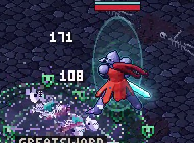
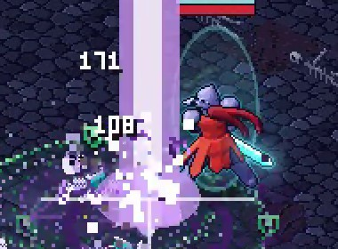
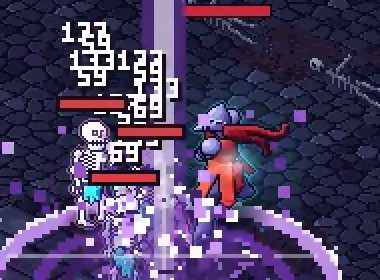
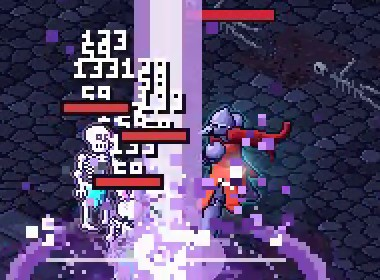
Guarding's own shell round him is emerald points, lit from the upper left. With a Guarding meld in front, its own ring of dots was drawn round him beside that shell, so he wore two. Now he wears Guarding's shell, and each meld dresses it with its own twist: Hemlock's thorns, Cinderward's fire, Fortress's stone, Bulwark's stud, Windward's wind, Carapace's plates, Riposte's spikes.
Hemlock, Cinderward, Fortress, Bulwark, Windward, Carapace, Redoubt, Shieldwall, Sanctuary, Parry, Aegis, Static, Minefield, Riposte.
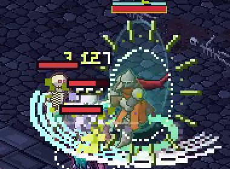
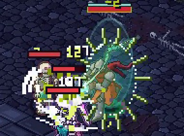
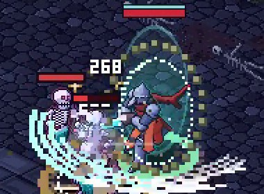
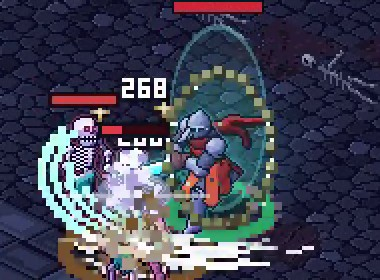
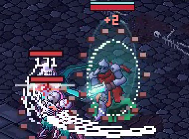
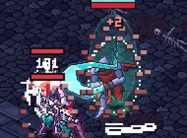
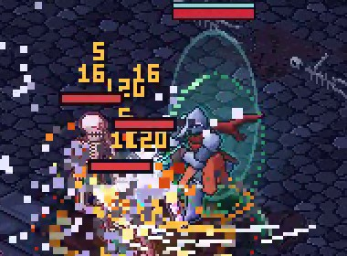
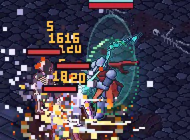
When Flash Freeze freezes something, Frost's own ice already bursts up round it and holds it, and the meld drew its own ice block and shards on top. Icebreaker's shatter is now Frost's own breaking ice, and Mire's bubbles are Poison's own.
Flash Freeze, Icebreaker, Mire.
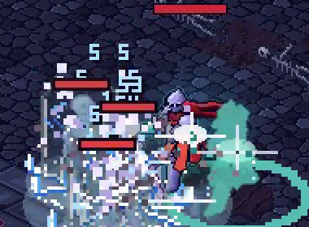
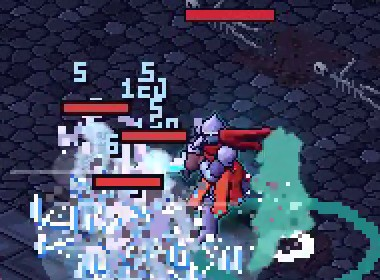
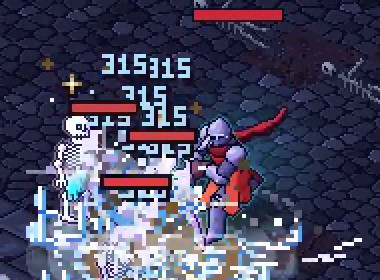
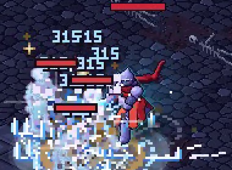
Tell me in the chat to switch it on, or what to change. It stays switched off until you say yes. The Leech melds' drain, on its own page, goes on with it.